- BỘ BIỂU ĐỒ THỐNG KÊ DỮ LIỆU VÀ THỰC NGHIỆM
- Phân bố 63 văn bản theo nhãn khu vực
- Hai ngôn ngữ trong corpus hiện tại
- Cơ cấu loại tài liệu
- Nguồn thu thập và đóng góp vào chỉ mục
- Năm ban hành theo metadata hiện có
- Độ dài văn bản không đồng đều
- Phân bố độ dài 3.285 đoạn
- Mười tài liệu đóng góp nhiều đoạn nhất
- Kiểm tra độ đầy đủ và định danh
- Danh mục nguồn và tài liệu đang tra cứu
- ETL với dữ liệu lặp: 3 lần đo / mức
- Kết quả truy xuất trên 15 câu hỏi chọn thủ công
- Ba ca kiểm tra chức năng đầu cuối
- Dung lượng các lớp trong lượt đồng bộ gần nhất
- Trạng thái pháp lý theo metadata đã lưu
- Sóng âm thật của hai đoạn người thuyết trình
BỘ BIỂU ĐỒ THỐNG KÊ DỮ LIỆU VÀ THỰC NGHIỆM
16 biểu đồ từ dữ liệu thật, mỗi hình có PNG 300 dpi và SVG. Phông Times New Roman; màu xanh đậm, vàng và xanh lá thống nhất với báo cáo. Về bản nháp.
Phân bố 63 văn bản theo nhãn khu vực
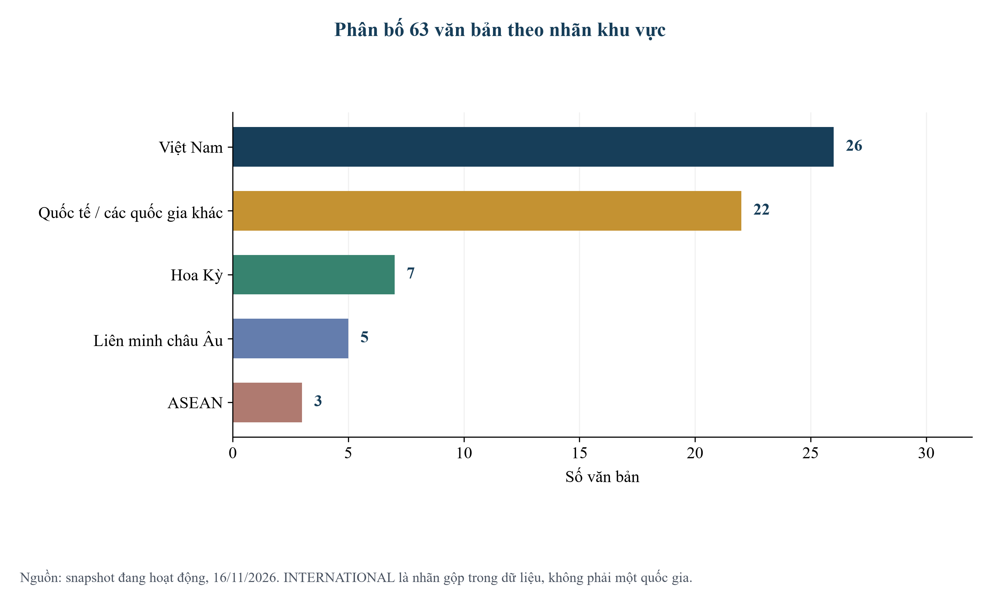
Nguồn: snapshot đang hoạt động, 16/11/2026. INTERNATIONAL là nhãn gộp trong dữ liệu, không phải một quốc gia.
PNG · SVG · Nguồn: evidence/document_statistics.csv.


Hai ngôn ngữ trong corpus hiện tại

Đếm theo trường language của văn bản; chưa đánh giá riêng chất lượng hỏi đáp xuyên ngôn ngữ.
PNG · SVG · Nguồn: evidence/document_statistics.csv.

Cơ cấu loại tài liệu
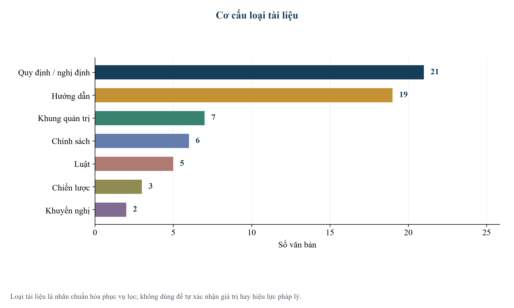
Loại tài liệu là nhãn chuẩn hóa phục vụ lọc; không dùng để tự xác nhận giá trị hay hiệu lực pháp lý.
PNG · SVG · Nguồn: evidence/document_statistics.csv.


Nguồn thu thập và đóng góp vào chỉ mục

API đóng góp 17/63 văn bản và 325/3.285 đoạn. Đây là dữ liệu đã công bố, không phải toàn bộ kết quả API quét được.
PNG · SVG · Nguồn: evidence/system_facts.json.

Năm ban hành theo metadata hiện có

Có 27/63 tài liệu thiếu published_date; không suy diễn năm từ tên tệp hoặc tiêu đề.
PNG · SVG · Nguồn: evidence/document_statistics.csv.

Độ dài văn bản không đồng đều
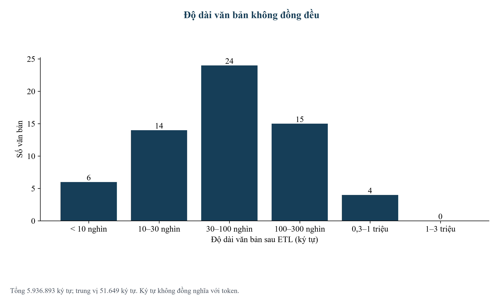
Tổng 5.936.893 ký tự; trung vị 51.649 ký tự. Ký tự không đồng nghĩa với token.
PNG · SVG · Nguồn: evidence/document_statistics.csv.


Phân bố độ dài 3.285 đoạn
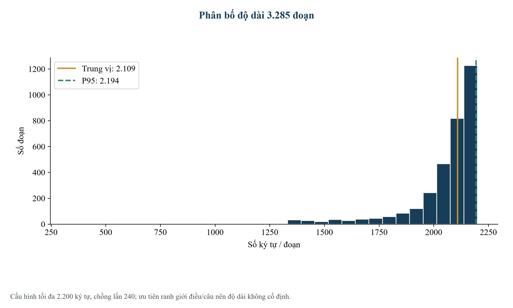
Cấu hình tối đa 2.200 ký tự, chồng lấn 240; ưu tiên ranh giới điều/câu nên độ dài không cố định.
PNG · SVG · Nguồn: evidence/chunk_statistics.csv.


Mười tài liệu đóng góp nhiều đoạn nhất

Đếm theo source_document_id. Tài liệu dài có thể chi phối kết quả truy xuất nếu thiếu lọc và xếp hạng bổ sung.
PNG · SVG · Nguồn: evidence/document_statistics.csv.

Kiểm tra độ đầy đủ và định danh
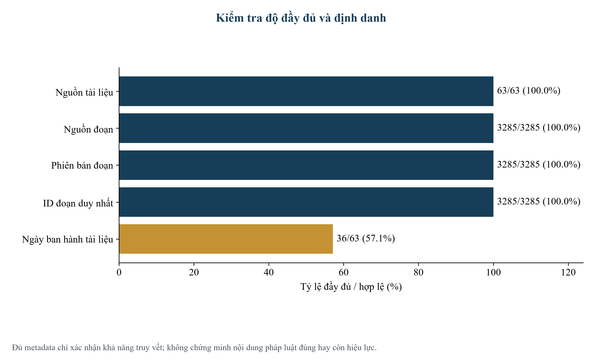
Đủ metadata chỉ xác nhận khả năng truy vết; không chứng minh nội dung pháp luật đúng hay còn hiệu lực.
PNG · SVG · Nguồn: evidence/system_facts.json; document_statistics.csv.


Danh mục nguồn và tài liệu đang tra cứu
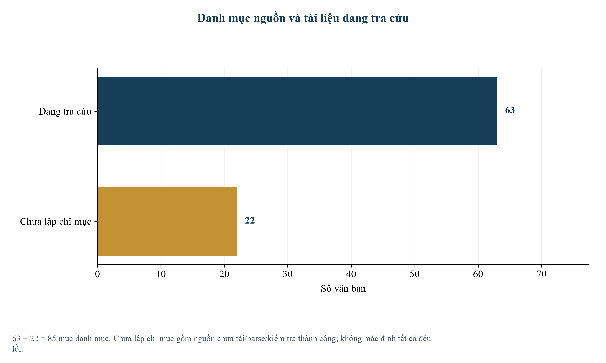
63 + 22 = 85 mục danh mục. Chưa lập chỉ mục gồm nguồn chưa tải/parse/kiểm tra thành công; không mặc định tất cả đều lỗi.
PNG · SVG · Nguồn: evidence/document_statistics.csv.


ETL với dữ liệu lặp: 3 lần đo / mức
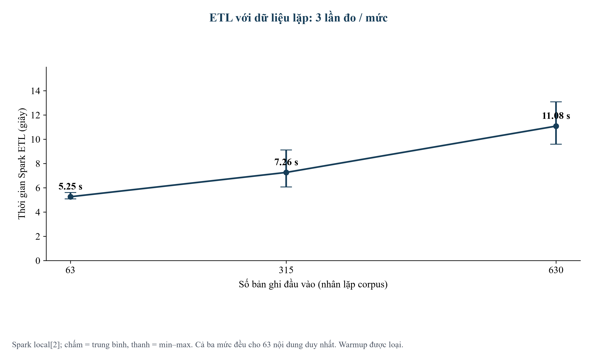
Spark local[2]; chấm = trung bình, thanh = min–max. Cả ba mức đều cho 63 nội dung duy nhất. Warmup được loại.
PNG · SVG · Nguồn: evidence/etl_scaling_results.json.


Kết quả truy xuất trên 15 câu hỏi chọn thủ công
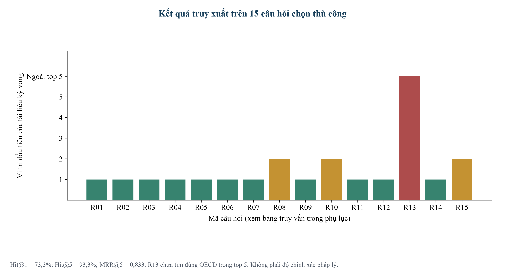
Hit@1 = 73,3%; Hit@5 = 93,3%; MRR@5 = 0,833. R13 chưa tìm đúng OECD trong top 5. Không phải độ chính xác pháp lý.
PNG · SVG · Nguồn: evidence/retrieval_results.json.


Ba ca kiểm tra chức năng đầu cuối
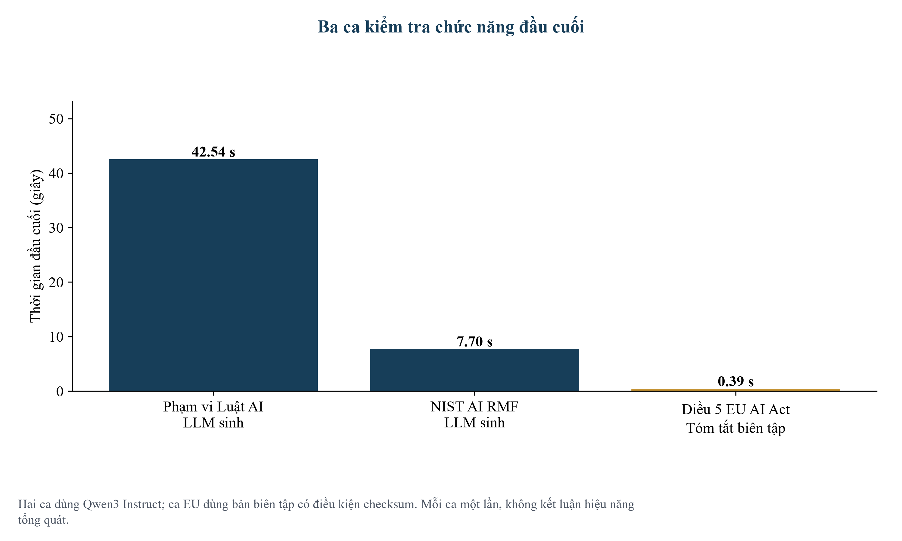
Hai ca dùng Qwen3 Instruct; ca EU dùng bản biên tập có điều kiện checksum. Mỗi ca một lần, không kết luận hiệu năng tổng quát.
PNG · SVG · Nguồn: evidence/llm_smoke.json.


Dung lượng các lớp trong lượt đồng bộ gần nhất
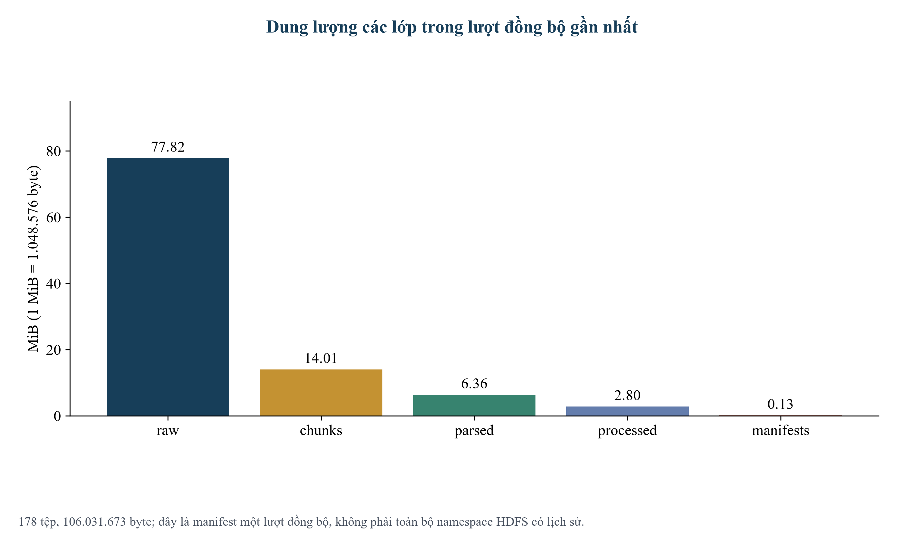
178 tệp, 106.031.673 byte; đây là manifest một lượt đồng bộ, không phải toàn bộ namespace HDFS có lịch sử.
PNG · SVG · Nguồn: evidence/system_facts.json → latest_sync.


Trạng thái pháp lý theo metadata đã lưu
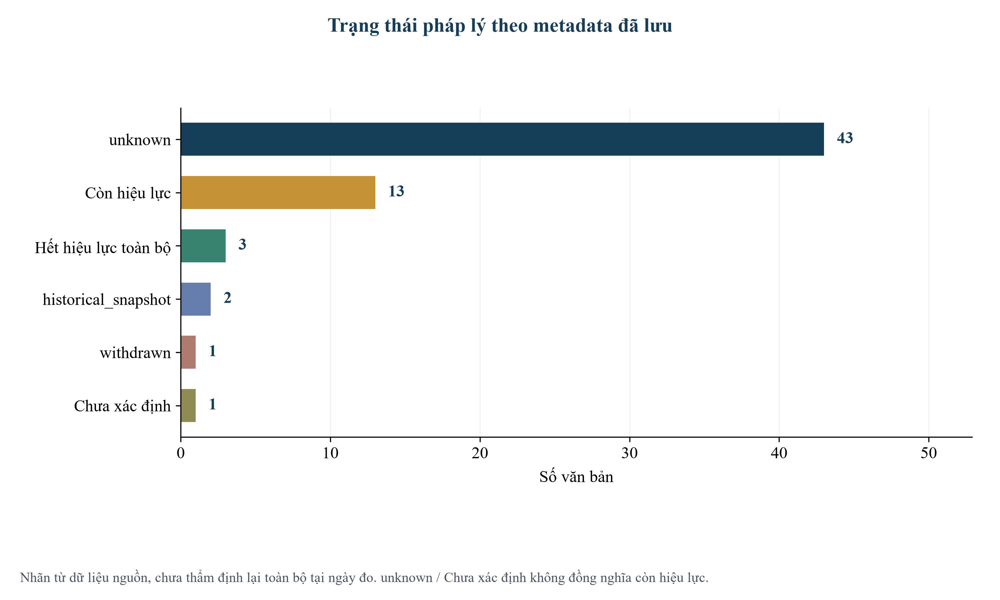
Nhãn từ dữ liệu nguồn, chưa thẩm định lại toàn bộ tại ngày đo. unknown / Chưa xác định không đồng nghĩa còn hiệu lực.
PNG · SVG · Nguồn: evidence/document_statistics.csv.


Sóng âm thật của hai đoạn người thuyết trình

Provider thực tế: piper; trích PCM từ WAV đã phát trong trình duyệt. Hình dạng sóng không chứng minh độ tự nhiên của giọng.
PNG · SVG · Nguồn: evidence/presenter_browser_check.json; am_thanh/*.wav.